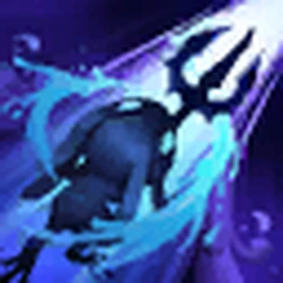
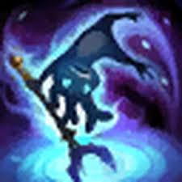
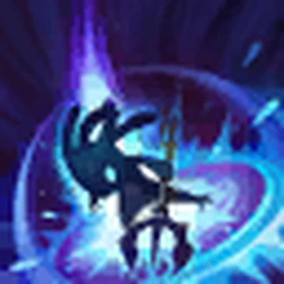
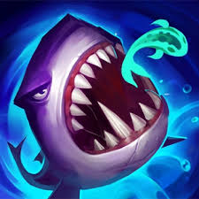

Fizz 🐟

Who is Fizz?
Fizz is a playful and elusive trickster from the seas in League of Legends, known for his agility, unpredictability, and burst damage.
Lore
Fizz comes from an ancient underwater city near Bilgewater. While others feared the deep, he explored it freely, forming a unique bond with the ocean and its creatures.
After his people disappeared, Fizz remained alone but continued protecting the seas. Mischievous yet brave, he defends his territory and plays tricks on those who underestimate him.
🎮 Gameplay
Fizz Highlights 🌊
Pro Fizz Plays 🦈
Fizz Personality
Fizz is playful, mischievous, and fearless. He enjoys confusing his enemies and doesn’t take things too seriously, but he can be surprisingly protective when it matters.
Abilities
-

Urchin Strike: Fizz dashes through enemies, dealing magic damage. -

Seastone Trident: Empowers attacks to deal bonus damage over time. -

Playful / Trickster: Fizz leaps into the air, becoming untargetable and crashing down. -

Chum the Waters: Throws a fish that summons a shark to damage enemies.